Identifier
Semantic scene understanding: objects, rough bboxes, relations, and action hints.
Qwen3-VL-ThinkingCan we design a unified parser to get all the information? How can we adapt code abstraction to each task?
01 · Physical cognitive reasoning
Drop, collision, rotation, and throw require different physical information: object position, gravity, direction, velocity, relative position, orientation, rotation, translation, and trajectory.
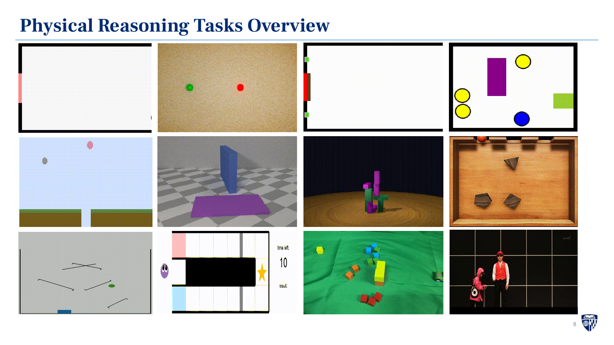
Parse Anything
Semantic scene understanding: objects, rough bboxes, relations, and action hints.
Qwen3-VL-ThinkingPer-object mask, track ID, score, and 2D bbox.
SAM3.1Depth, point map, camera pose, and geometry feature.
VGGT-omegaHigh-confidence 3D tracklets: 3D trajectory, visibility, and confidence.
SpatialTrackerV2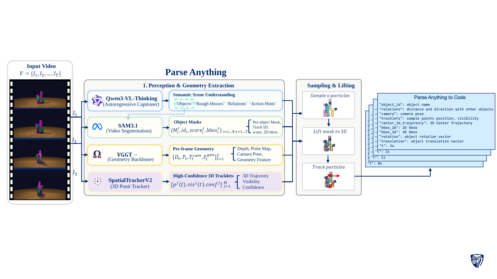
02 · Parse Anything to Code
One flat temporal record from the accepted Hamrick example shown in the slides.
Loading accepted code…03 · Evaluation
The accepted Physics-280 audit contains 20 samples from each of 14 studies. mIoU is used only for evaluation and never enters parsing.
04 · Parsing baselines
Direct VLMs predict 2D boxes and centers from RGB frames. Parse Anything uses Qwen3-VL-8B-Thinking, SAM3.1, VGGT-omega, and SpatialTrackerV2. Specialist methods are evaluated as complete 280-sample pipeline conditions.
| Method | Evaluated | mIoU | Coverage |
|---|
| Method | Evaluated | Specialist invoked | Full mIoU |
|---|
Each 3D specialist is invoked on 40 routed geometry samples. The other 240 strict-2D codes are unchanged because Analyzer and 3D Tracker roles are not invoked on that path.
05 · Throughput
Identifier, 2D Mask, Analyzer, and Points Tracker timing follows the table reported in the slides.
06 · Qualitative results
Each animation is an accepted parsed-code visualization from the studies shown in the slides.
mIoU = 89.72%
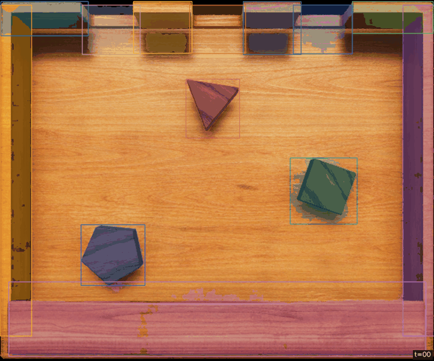
mIoU = 81.71%
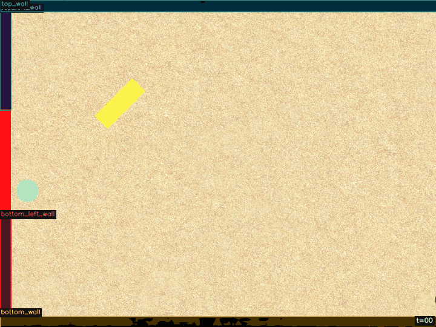
mIoU = 85.93%
mIoU = 61.24%
mIoU = 78.05%
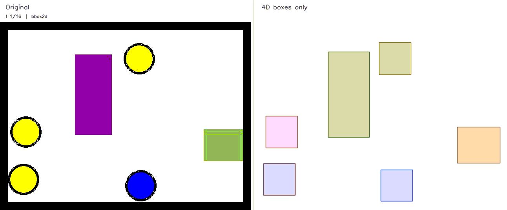
mIoU = 76.88%
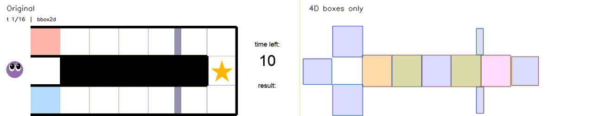
mIoU = 78.56%
07 · Video consistency
The VLM Verifier compares the Render with the Original Video and returns a Refine instruction to the Agent.
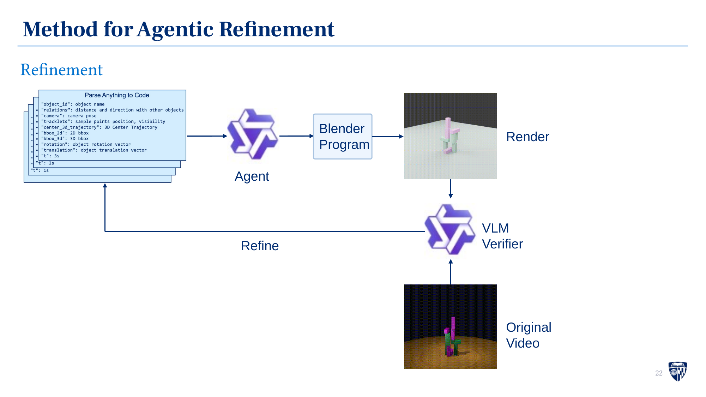
08 · Adaptive abstraction
Long context, difficult to understand. Specific task needs specific information.
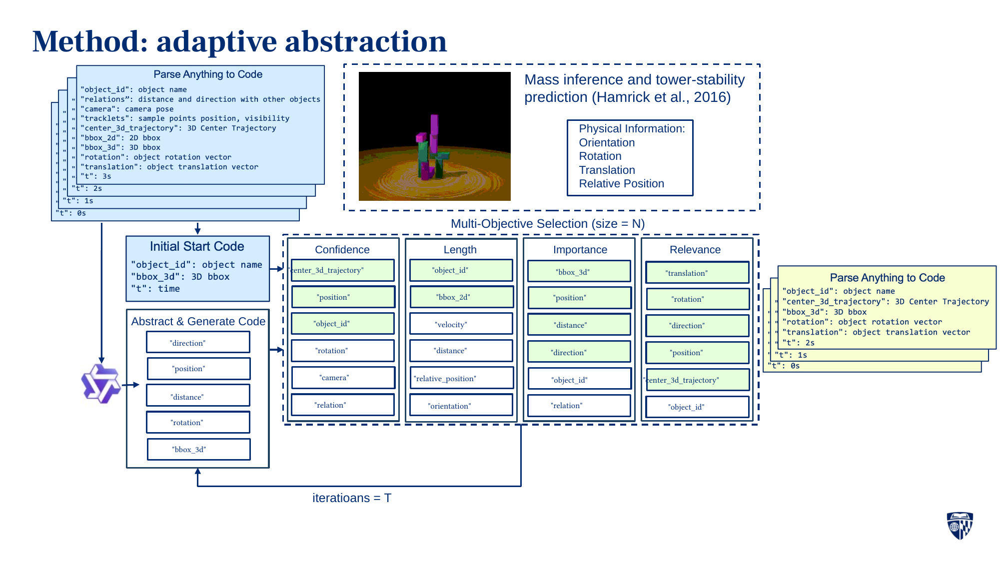
| Video + Qwen3-VL-8B-Instruct | 54.0% |
| Video + Qwen3-VL-8B-Instruct + Code | 53.5% |
| Video + Qwen3-VL-8B-Instruct + Abstracted Code | 69.0% |
| Condition | Score | Iteration time |
|---|---|---|
| Video + Qwen-VL | 47.65% | N/A |
| Video + Multi-turn Selection | 64.52% | N/A |
| Video + adaptive abstraction | 66.40% | 265.13 s |
09 · Datasets
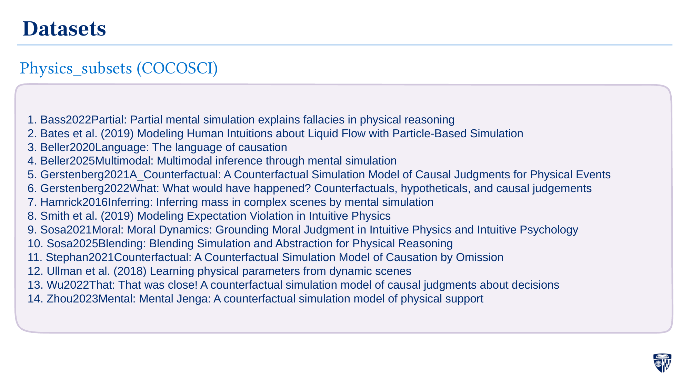
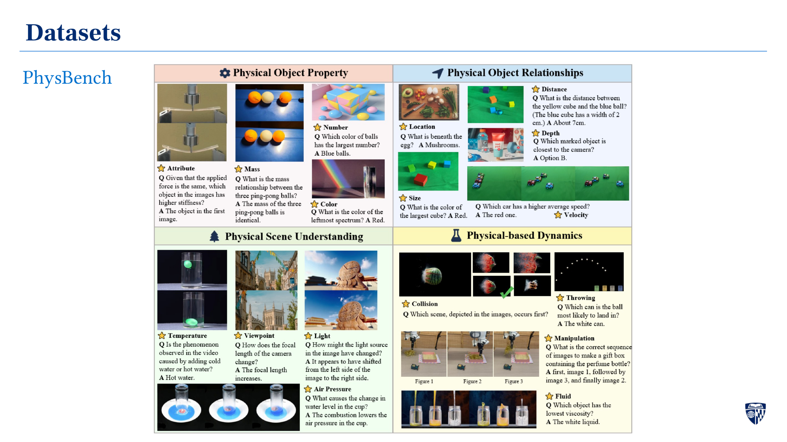
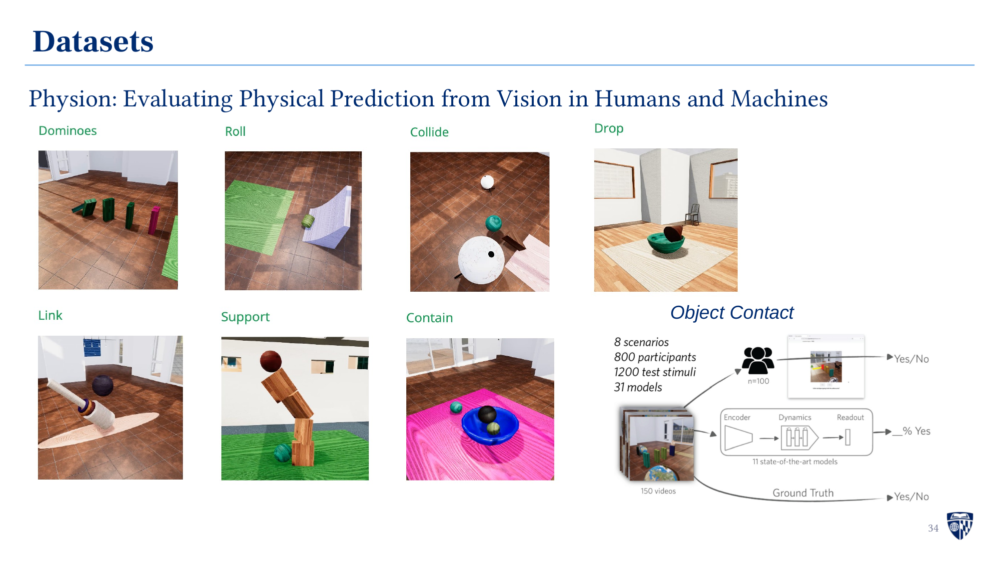